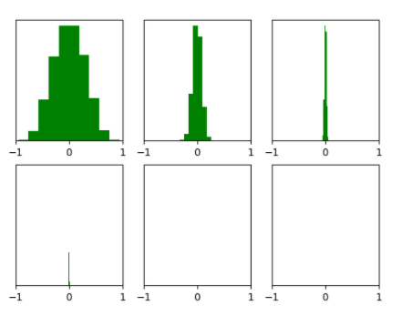

🎁 权重初始化
初始化的作用
在深度学习中，神经网络的权重初始化方法（weight initialization）对模型的收敛速度和性能有着至关重要的影响。模型的训练，简而言之，就是对权重参数 W 的不停迭代更新，以期达到更好的性能。而随着网络深度（层数）的增加，训练中极易出现梯度消失或者梯度爆炸等问题。
初始化需要避免的情况
首先，我们不能让权重的梯度为 0，很显然权重梯度为 0，权重将不再更新。然而又知道有些激活函数是有饱和区的。简而言之，在这个区值的梯度基本为 0，很难进行梯度更新。参数初始化需要注意：
- 各层激活值不会出现饱和现象
- 各层激活值不为0
全零初始化是否可行
在线性回归，logistics 回归的时候，基本上都是把参数初始化为 0，我们的模型也能够很好的工作（可初始化为0的模型）。然后在神经网络中，把 W 初始化为 0 是不可以的。这是因为如果把 W 初始化 0，那么在前向传播过程中，每一层的神经元学到的东西都是一样的（激活值均为 0），而在 bp 的时候，不同维度的参数会得到相同的更新，因为他们的 gradient 相同，称之为“对称失效”。
以上的话可以简单认为在神经网络的全零初始化会使参数更新一致，然后由于参数的值也都一样，所以一层的所有参数退化为一个。然后没有隐藏层或者逻辑回归时，可以将其全零初始化。
各类初始化
标准随机初始化
这里常用的有正态分布、均匀分布等。它们的参数均值都在 0 的附近，然后有正有负，一般会把参数设置为接近 0 的很小的随机数。随机初始化也有缺点：当神经网络的层数增多时，会发现越往后面的层的激活函数（使用 tanh ）的输出值几乎都接近于 0：

总结来说，一般的随机初始化存在后层网络激活函数的输出值趋近于 0 的问题，且网络输出数据分布的方差会受每层神经元个数的影响（随之改变）。虽然上诉的输出数据均值都接近于 0，但是由于方差的改变导致最后整个输出数据也接近于 0。针对这些问题，Glorot 等人提出在初始化的同时加上对方差大小的规范化。这样不仅获得了更快的收敛速度，而且维持了输入输出数据分布方差的一致性，也避免了后面层的激活函数的输出值趋向于 0 的问题。
Glorot条件
优秀的初始化应该保证以下两个条件：
- 各个层的激活值 h（输出值） 的方差要保持一致，即 $\forall (i,j): Var(h^{i}) = Var(h^{j})$
- 各个层对状态 z 的梯度的方差要保持一致，即 $\forall (i,j): Var(\frac{\partial Cost}{\partial z^{i} }) = Var(\frac{\partial Cost}{\partial z^{j} })$
其实是一个保证前向时数据基本分布不变，一个保证反向时数据基本分布不变
关于方差的三个事实
既然要保持上面的两个方差在各个网络层中不改变，那也就是它实际上是会改变的，关于为什么会改变的公式推导，后面详细说明，这里直接引入三个基本的客观事实（两有关一无关）：
- 各个层激活值 h（输出值）的方差与网络的层数有关；
- 关于状态 z 的梯度的方差与网络的层数有关；
- 各个层权重参数W的梯度的方差与层数无关；
可参见论文《Understanding the difficulty of training deep feedforward neural networks》
初始化的几点要求
- 参数不能全部初始化为 0，也不能全部初始化同一个值；
- 最好保证参数初始化的均值为 0，正负交错，正负参数大致上数量相等；
- 初始化参数不能太大或者是太小，参数太小会导致特征在每层间逐渐缩小而难以产生作用，参数太大会导致数据在逐层间传递时逐渐放大而导致梯度消失发散，不能训练；
Xavier 初始化
其认为各层的激活值和状态梯度的方差在传播过程中的方差应该保持一致。即：
$$
\begin{aligned}
\forall (i, j),Var(x^{i}) &= Var(x^{j}) \\\
\forall (i, j),Var\Big(\frac{\partial Cost}{\partial y^{i} }\Big) &= Var \Big(\frac{\partial Cost}{\partial y^{j} }\Big)
\end{aligned}
$$
这两个条件也称为 Glorot 条件。首先给出关于状态得梯度和关于权重的梯度及部分推导：
$$
\begin{aligned}
\pmb{x}^{i+1} &= f(\pmb{y}^i) \\\
\pmb{y}^{i+1} &= \pmb{W}^{i+1} \times \pmb{x}^{i+1} \\\
\frac{\partial Cost}{\partial y^{i}_{k}} &= \frac{\partial Cost}{\partial \pmb{y}^{i+1}}\frac{\partial \pmb{y}^{i+1}}{\partial \pmb{x}^{i+1}} \frac{\partial \pmb{x}^{i+1}}{\partial f(\pmb{y}^{i})} \frac{\partial f(\pmb{y}^i)}{\partial \pmb{y}^{i}} \frac{\partial \pmb{y}^{i}}{\partial y^{i}_{k}} \\\
\frac{\partial Cost}{\partial w^{i}_{l,k}} &= \frac{\partial Cost}{\partial y^{i}_{k}} \frac{\partial y^{i}_{k}}{\partial w^i_{l,k}}
\end{aligned}
$$
首先 $y^{i}_{k}$ 代表第 $i$ 层的，输出的第 $k$ 个（目前先假设输入输出都是一维向量，且输入的方差一致），$f(x)$ 是激活函数，另外做如下假设：
- 激活函数对称：便于假设每层的输入均值为 0 （加上每层权重均值为 0，输入均值也就为 0）
- $f^{\prime}(0) = 1$
- 初始时，状态值都落在线性区域有 $f(y^{i}_{k}) = y^{i}_{k},f^{\prime}(y^{i}_{k}) = 1$
将上式进行简化：
$$
\begin{aligned}
\frac{\partial Cost}{\partial y^i_k} &= \frac{\partial Cost}{\partial \pmb{y}^{i+1}}\frac{\partial \pmb{y}^{i+1}}{\partial \pmb{x}^{i+1}} \frac{\partial \pmb{x}^{i+1}}{\partial f(\pmb{y}^i)} \frac{\partial f(\pmb{y}^i)}{\partial \pmb{y}^i} \frac{\partial \pmb{y}^i}{\partial y^i_k} \\\
&= \frac{\partial Cost}{\partial \pmb{y}^{i+1}} (\pmb{W}^{i+1})^{\top} \cdot 1 \cdot f^{\prime}(\pmb{y}^i) \cdot \pmb{e}^i_k \\\
&= \frac{\partial Cost}{\partial \pmb{y}^{i+1}} (\pmb{W}^{i+1})^{\top} \cdot 1 \cdot 1 \cdot \pmb{e}^i_k \\\
& = \frac{\partial Cost}{\partial \pmb{y}^{i+1}} (\pmb{W}^{i+1})^{\top}_{.,k} \\\
\frac{\partial Cost}{\partial w^i_{k,l}} &= \frac{\partial Cost}{\partial y^i_k} \frac{\partial y^i_k}{\partial w^i_{k,l}} \\\
&= \frac{\partial Cost}{\partial y^i_k} x^i_l
\end{aligned}
$$
首先推导一下每层的输入与上一层的输入方差的关系（注意我们是在一定假设下的，独立分布的两个变量积的方差等于这两个变量方差的积。同一层的输入各个元素的方差是相同的，权重各个元素的方差是相同的）：
$$
\begin{aligned}
Var(x^i_k) &= Var(f(y^{i-1}_k)) \\\
&= Var(y^{i-1}_k) \\\
&= Var(\pmb{W}^{i-1}_{k,.} \times \pmb{x}^{i-1}) \\\
&= Var(\sum_{l=1}^{n_{i-1}} W^{i-1}_{k,l} x^{i-1}_{l}) \\\
&= \sum_{l=1}^{n_{i-1}} Var(W^{i-1}_{k,l})Var(x^{i-1}_{l}) \\\
&= n_{i-1}Var(W^{i-1}_{k,l})Var(x^{i-1}_{l})
\end{aligned}
$$
由于数值之间都是独立同分布，根据上式可以推导出
$$
Var(x^{i+1}) = n_{i}Var(W^{i})Var(x^{i})
$$
由之前推导的梯度公式，我们同样可以来推导相邻层梯度的方差（注意反向传播就是看这层的输出元素个数了，即 $n_{i+1}$：
$$
\begin{aligned}
Var \Big(\frac{\partial Cost}{\partial y^i_k}\Big) & = Var \Big(\frac{\partial Cost}{\partial \pmb{y}^{i+1}} (\pmb{W}^{i+1})^{\top}_{.,k}\Big)\\\
&=Var \Big(\sum_{l=1}^{n_{i+1}}\frac{\partial Cost}{\partial y^{i+1}_l}(W^{i+1})^{\top}_{l,k} \Big) \\\
&=\sum_{l=1}^{n_{i+1}}Var \Big(\frac{\partial Cost}{\partial y^{i+1}_l}\Big)Var\Big((W^{i+1})^{\top}_{l,k} \Big) \\\
&=n_{i+1} Var\Big(\frac{\partial Cost}{\partial y^{i+1}_l}\Big)Var\Big((W^{i+1})^{\top}_{l,k} \Big) \\\
\Rightarrow Var \Big(\frac{\partial Cost}{\partial y^i}\Big) & = n_{i+1} Var\Big(\frac{\partial Cost}{\partial y^{i+1}}\Big)Var\Big(W^{i+1} \Big)
\end{aligned}
$$
对于一个 d 层的网络，则有：
$$
\begin{aligned}
Var(x^{i}) &=Var(x^0)\prod_{j=1}^{i-1}n_jVar(W^{j}) \\\
Var \Big(\frac{\partial Cost}{\partial y^{i}}\Big) & = Var\Big(\frac{\partial Cost}{\partial y^{d}}\Big)\prod_{j = i}^{d}n_{i} Var\Big(W^{i+1}\Big)
\end{aligned}
$$
综上要想满足各层的激活值和状态梯度的方差有：
$$
\begin{aligned}
\forall i, 1 &=n_iVar(W^{i+1}) \\\
\forall i, 1 &=n_{i+1}Var(W^{i+1})
\end{aligned}
$$
将上两式相加有：
$$
Var(W^{i+1}) = \frac{2}{n_i + n_{i+1}}
$$
Kaiming 初始化
首先，我们来设定一些假设，并且复习几个公式。假设：
$$
\begin{aligned}
E[W] &= 0 \\\
E[X] &= 0 \\\
E[\Delta Y] &= 0
\end{aligned}
$$
几个独立随机变量之和的方差等于各变量的方差之和
$$
Var(X_1 + \cdots + X_n) = Var(X_1) + \cdots + Var(X_n)
$$
如果为同分布的话，结果变为 $nVar(X)$。方差与期望之间的关系：
$$
Var(X) = E(X^2) - (EX)^2
$$
两个独立变量乘积的方差，且各自期望为 0，协方差为 0
$$
\begin{aligned}
Var(XY) &= E(X^2Y^2) - E(XY)^2 \\\
&= E(X^2)E(Y^2) - E(X)^2E(Y)^2 \\\
&= (Var(X) + E(X)^2)(Var(Y) + E(Y)^2) \\\
& = Var(X)Var(Y)
\end{aligned}
$$
kaiming 初始化只包含卷积和 ReLU 函数，对于卷积，可以把卷积核当作全连接层的权重，然而每做一次卷积只是更换了一次“全连接层”的输入。
🎄 前向传播
因此在前向传播时，可以简化为
$$
Y_l = W_lX_l + B_l
$$
其中，$Y_{li}$ 代表第 $l$ 层中第 $i$ 位置的输出，并使用 $Y_{l}$ 指第 $l$ 层中所有位置的输出。假设某一位置的输入 $X_{li}$ 的 shape 为 $n_{in} = k \times k \times c_{in}$，输出通道为 $c_{out}$。对于某一个位置而言，$W_{li}$ 有 shape $c_{out} \times n_{in}$。很容易知道，对于某个位置的有 $ c_{out}$ 个输出，因此对于某个位置的某一个输出有：
$$
y_l = \sum^{n_{in}}_{i=0} w_{li}x_{li}
$$
由于输入各值是同分布，权重也如此，因此有：
$$
Var(y) = n_{in}Var(wx)
$$
由于 x 是上一层 relu 得到，期望不再为 0，但权重的期望是为 0 的。可得：
$$
\begin{aligned}
Var(w_lx_l) &= E((w_lx_l)^2) - E(w_l)^2E(x_l)^2 \\\
Var(w_lx_l) &= E(w_l^2)E(x_l^2) \\\
Var(w_lx_l) &= Var(w_l^2)E(x_l^2) \\\
\Rightarrow Var(y_l) &= n_{in}Var(w_l)E(x_l^2)
\end{aligned}
$$
根据网络得知 $x_l = f(y_{l-1})$，其中 $f$ 代表 ReLU 函数，有：
$$
\begin{aligned}
E(x^2_l) = E(f^2(y_{l-1})) &= \int^{+\infty}_{-\infty} p(y_{l-1})f^2(y_{l-1}) dy_{l-1} \\\
\because \quad &y_{l-1} \in (-\infty, 0), f(y_{l-1}) = 0 \\\
&y_{l-1} \in (0, +\infty), f(y_{l-1}) = y_{l-1} \\\
& = \int^{+\infty}_{0} p(y_{l-1})(y_{l-1})^2 dy_{l-1} \\\
\Rightarrow E(x^2_l) &= \frac{1}{2} \int^{+\infty}_{-\infty} p(y_{l-1})(y_{l-1})^2 dy_{l-1} \\\
& = \frac{1}{2} E(y_{l-1}^2)
\end{aligned}
$$
因为权重是在 0 周围均匀分布的，且均值为 0，所以易得 $E(y) = 0$。则可以得到 $Var(y_{l-1}) = E(y_{l-1}^2)$。带入则有：
$$
Var(y_l) = \frac{1}{2} n_{in}Var(w_l)Var(y_{l-1})
$$
要想满足前后的方差相等，则有：
$$
Var(w_l)= \frac{2}{n_{in}}
$$
🎄 反向传播
首先文章中的 $\Delta$ 作者应该想表达的是梯度，而不是差分的意思，同理易得其公式为
$$
\begin{aligned}
Y_l &= W_lX_l + B_l \\\
\because \quad \frac{\partial Loss}{\partial X_l} &= \frac{\partial Loss}{\partial Y_l}\frac{\partial Y_l}{\partial X_l} \\\
\frac{\partial Loss}{\partial X_l} &= \frac{\partial Loss}{\partial Y_l} W_l^{\top} \\\
\Rightarrow \Delta X_l &= W_l^{\top} \Delta Y_l
\end{aligned}
$$
由于 $E(\Delta Y_l) = 0$，然后权重也是期望为 0，那易得 $\Delta X_l$ 的期望也是为 0。接下来就是推导 $\Delta X_{l+1}$ 与 $\Delta Y_l$ 的关系。首先有：
$$
\begin{aligned}
X_{l+1} &= f(Y_l) \\\
\frac{\partial Loss}{\partial Y_{l}} &= \frac{\partial Loss}{\partial X_{l+1}}\frac{\partial X_{l+1}}{\partial Y_{l}} \\\
\frac{\partial Loss}{\partial Y_{l}} &= \frac{\partial Loss}{\partial X_{l+1}}\frac{\partial f(Y_l)}{\partial Y_{l}} \\\
\frac{\partial Loss}{\partial Y_{l}} &= \frac{\partial Loss}{\partial X_{l+1}} f^{\prime}(Y_l) \\\
\Rightarrow \Delta Y_l &= f^{\prime}(Y_l) \Delta X_{l+1}
\end{aligned}
$$
这里考虑的 ReLU 函数的导数一半为 0，一半为 1。假设各占一半，于是有：
$$
\begin{aligned}
E(\Delta Y_l) &= \frac{1}{2} \Delta X_{l+1} = 0 \\\
Var(\Delta Y_l) &= E((\Delta Y_l)^2) \\\
&= E((f^{\prime}(Y_l) \Delta X_{l+1})^2) \\\
&= \frac{1}{2}E((0 \times \Delta X_{l+1})^2) + \frac{1}{2}E((1 \times \Delta X_{l+1})^2) \\\
&= \frac{1}{2}Var(\Delta X_{l+1})
\end{aligned}
$$
同样一个位置的 $\Delta x_{li}$ 依然是由 $n_{out} = k \times k \times c_{in} $ 个 $\Delta y_{lj}, j = 1,2, \dots, n_{out}$ 与相应权重相乘相加而成的。这样则有：
$$
\begin{aligned}
Var(\Delta x_{l+1}) &= n_{out}Var(w_l)Var(\Delta y_{l}) \\\
&= \frac{1}{2} n_{out}Var(w_l)Var(\Delta x_{l}) \\\
\Rightarrow Var(w_l) &= \frac{2}{n_{out}}
\end{aligned}
$$
🍉🍉🍉 完结